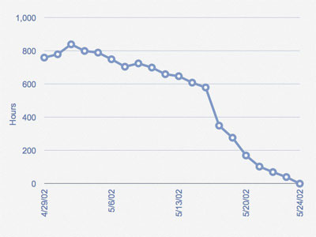

| Main Description | A estimativa de trabalho restante no Sprint é calculada diariamente e representada graficamente, resultando em um Sprint Burndown Chart . O eixo vertical mostra o tempo do esforço restantes para o Sprint. O eixo horizontal mostra os dias do Sprint. O Burndown é exibido pela linha que desce a partir do início do Sprint com as horas iniciais, até ao final do Sprint, sem horas restantes.

O time faz o possível para alocar a quantidade certa de trabalho no Sprint, mas às vezes, durante a Reunião Sprint Planning, aloca-se atividades a menos ou a mais e, nestes casos, o time precisa adicionar ou remover atividades. No Sprint Burndown Chart acima você pode observar que o time alocou atividades a mais inicialmente e ainda tinha, aproximadamente, 600 horas até dia 16/5/02. Neste caso o Product Owner foi consultado e foi acordada a remoção de algumas atividades do Sprint, o que provocou a grande descida no gráfico entre os dias 16/05/02 (619 horas) e 17/05/02. A partir de então, o time manteve um progresso consistente e finalizou o Sprint com sucesso.
|